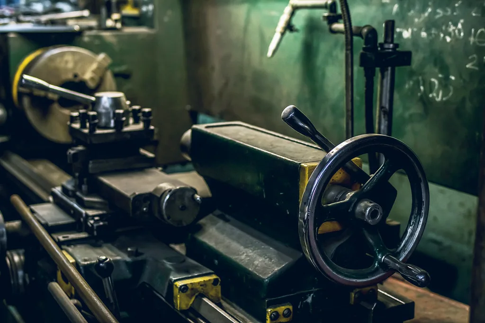

- Úvod
- O nás
Rodinná firma ve druhé generaci
Josef Setina začal v roce 1996 s jedním soustruhem v garáži. Dnes firmu vede jeho syn Petr a v hale u dálnice D1 pracuje 34 lidí.

Domluvíme se rychle
Jsme dost velcí na série a pořád dost malí na to, abychom se domluvili rychle. Technolog, který vaši zakázku nacení, ji pak připraví i do výroby. Nemusíte nic vysvětlovat dvakrát.
Do Brna to máme 20 minut, do Vyškova 15. Díly vozíme vlastní dodávkou, takže hotová zakázka je u vás obvykle ještě týž den.
Třísky třídíme podle materiálu a vozíme k recyklaci, halu od roku 2022 vytápíme teplem z kompresorů.
Jak jsme rostli
Třicet let, tři haly a pořád stejné pravidlo: díl odjede, až když bychom si ho sami koupili.
Soustruh v garážiJosef Setina soustruží náhradní díly pro zemědělská družstva v okolí.
První CNC a první halaPronájem dílny v Rousínově a první zaměstnanci.
Certifikace ISO 9001Začínáme dodávat výrobcům čerpadel a balicích strojů.
Vlastní hala u D12 600 m² výroby, svařovna a nové soustružnické centrum.
Pětiosé frézování a měrovnaDvě pětiosá centra a souřadnicový měřicí stroj.
Druhá generaceVedení firmy přebírá Petr Setina, Josef zůstává u technologie.
S kým budete mluvit
Telefon zvedáme od šesti ráno. Když nejsme u stolu, zavoláme zpátky týž den.
Lenka HájkováObchod a nacenění+420 517 000 100hajkova@setina-obrabeni.cz
Petr SetinaJednatel, nové projekty a nábor+420 517 000 101setina@setina-obrabeni.cz
Martin KubíčekVedoucí kvality a měrovny+420 517 000 102kubicek@setina-obrabeni.cz
Kde nás najdete
Průmyslová 1420, 683 01 Rousínov. Z dálnice D1 sjeďte na Rousínov a pokračujte směrem k průmyslové zóně, hala je druhá vpravo.
Příjem materiálu a výdej
Po–Pá 6:00–14:00. Rampa pro dodávky i kamiony, vysokozdvižný vozík do 3 t.
Prohlídka provozu
Rádi vám halu ukážeme. Domluvte se s Lenkou Hájkovou, prohlídka trvá asi 45 minut.
Chcete u nás pracovat?
Hledáme frézaře, seřizovače a svářeče. Zaučíme vás a výplatu máte vždy do 10. dne v měsíci.